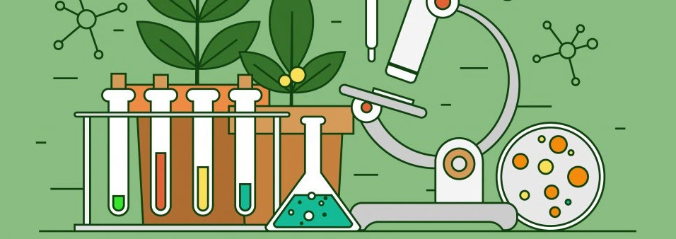

|

Merokok untuk Mood Booster? Pikir Ulang Lagi Deh!Perkembangan abad milenia dengan arus globalisasi dan tekanan pekerjaan yang tinggi terutama di kota-kota besar membuat masyarakat mencari sarana untuk menghilangkan stres. Sebagian orang melepaskan stres yang dialaminya dengan rekreasi bersama teman atau keluarga. Akan tetapi sebagian lainnya, memilih cara yang lebih praktis yaitu dengan merokok. Menurut sebagian orang, kegiatan merokok dapat menghilangkan stres, meringankan pikiran atau semacam mood booster untuk memulai semangat baru. Akan tetapi di sisi lain, rokok memiliki efek samping yang pengobatannya tidak praktis untuk manusia. Di dalam tubuh manusia terdapat jutaan molekul yang saling berintegrasi dan bekerja untuk mempertahankan kehidupan manusia. Kerusakan pada salah satu komponennya dapat menyebabkan kelainan pada organisme yang akhirnya menimnulkan penyakit. Pada manusia, kita mengenal penyakit yang sampai sekarang masih membingungkan para ilmuwan yaitu kanker. Kanker dapat terjadi di manapun dan kapanpun dalam perjalanan hidup manusia. Kanker adalah istilah untuk abnormalitas sel yang mana sel tersebut kehilangan kendali dalam memperbanyak dirinya. Sebenarnya, pada keadaan normal, sel memiliki siklus pembelahan yang teratur dalam meiosis pada sel germinal dan mitosis pada sel somatik. Seringkali, perubahan ini ditimbulkan akibat pengaruh zat karsinogenik sehingga mengubah asam nukleotida yang ada pada gen manusia. Perubahan (mutasi) penyebab kanker ini dapat terjadi karena dua golongan gen yaitu gen supresor tumor dan gen proto-onkogen. Gen supresor tumor adalah gen yang berperan untuk menghasilkan protein penghambat tumor yang mengontrol pertumbuhan sel. Gen supresor tumor ini sering disebut juga antionkogen. Mutasi pada gen ini menyebabkan tidak adanya kontrol (respon penghambat) untuk mencegah sel terus bereplikasi, sehingga sel akan terus menerus masuk ke fase mitosis. Begitu juga dengan proto onkogen, gen yang termasuk ke dalam golongan onkogen adalah gen yang memiliki peran dalam menginduksi proses replikasi sel. Akan tetapi, jika mutasi terjadi pada gen ini, dengan perubahan yang signifikan, proto onkogen akan berubah menjadi onkogen dan terus menerus menginduksi sel masuk ke fase pembelahan. Kanker mulut adalah salah satu kanker yang paling sering terjadi pada perokok. Kanker ini disebabkan oleh mutasi pada gen yang berperan menginduksi pembelahan sel. Salah satu gen yang sering ditemukan termutasi pada kanker mulut adalah Wnt1 (Wingless-Integrated 1) Homo sapien. Gen ini akan mengkode protein WNT1 yang merupakan protein sinyal ekstraseluler. Protein ini kemudian akan diterima oleh reseptor Frizzled. Selanjutnya, sinyal terusannya yaitu beta katenin (β-catenin) akan terakumulasi di sitoplasma, kemudian masuk ke dalam nukleus untuk membentuk kompleks transkripsional aktif dengan faktor transkripsi guna mengontrol ekspresi gen yang mengatur protein D-cyclin, u-Par, dan lainnya. Mutasi yang terjadi mengubah asam amino pada bagian protein yang berinteraksi langsung dengan reseptor Frizzled. Protein WNT1 berinteraksi dengan reseptornya dengan interaksi hidrofobik. Perubahan asam amino dan interaksinya dengan asam amino lain membuat muatan daerah interaksi ini lebih hidrofobik dan afinitas terhadap reseptor diprediksi makin bertambah. Hal ini membuat jalur WNT1 terus menerus teraktivasi sehingga sel mukosa rongga mulut terus menerus membelah menjadi kanker. Sering kali, pasien yang datang ke rumah sakit dengan keluhan tonjolan di dalam mulut terlambat untuk memeriksakan diri. Pasien tidak menyadari kalau kanker itu sudah tumbuh dan sudah berada di stadium lanjut. Hal ini sangat berbahaya melihat lokasi kanker dekat dengan otak maka metastasis pertama bisa terjadi di area kepala.Oleh karena itu, kebiasaan merokok ini meski dikatakan oleh kebanyakan perokok dapat meningkatkan semangat, mencegah kantuk, dan lainnya ternyata memiliki efek penyakit yang luar biasa. Masih ada berbagai macam cara mood booster lain selain merokok dan tidak memiliki efek samping terhadap kesehatan. Jadi lebih baik berfikir ulang untuk memiliki kebiasaan merokok ini. |
|||

Nisfa Lailatul AzizahHalo... nama saya Nisfa Lailatul Azizah. Saya mahasiswa semester 6 Universitas Negeri Malang program studi S1 Pendidikan Matematika. Belajar bukan hanya dari buku yang kita baca melainkan dari apa saja yang bisa kita gunakan untuk belajar. Alam, keadaan sosial, orang lain, dan masih banyak lagi sumber yang dapat kita gunakan untuk belajar. Belajarlah dimanapun dan kapnpun. |
|||